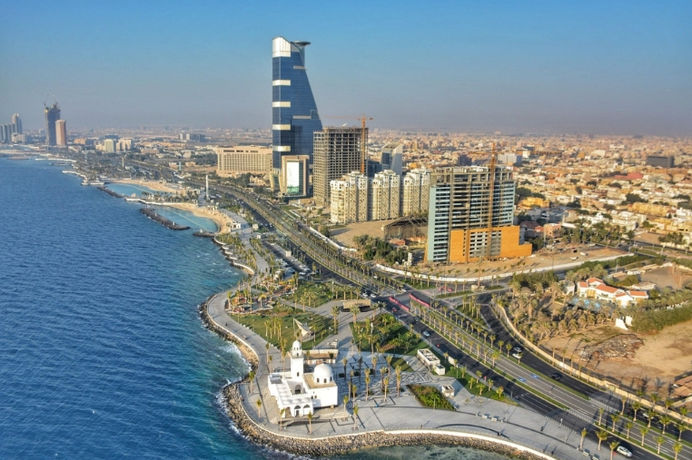

Hello Visitor,
There are so many places that you can visit in Saudi Arabia! Saudi Arabia is actually well known for its diverse landscape and every place is worth giving a visit. There are some places that attract a large number of people like you. For example, there are some many majestic mosques, wonderful museums and more. To add on, some places symbolize history from the past and some places are modern as well.
